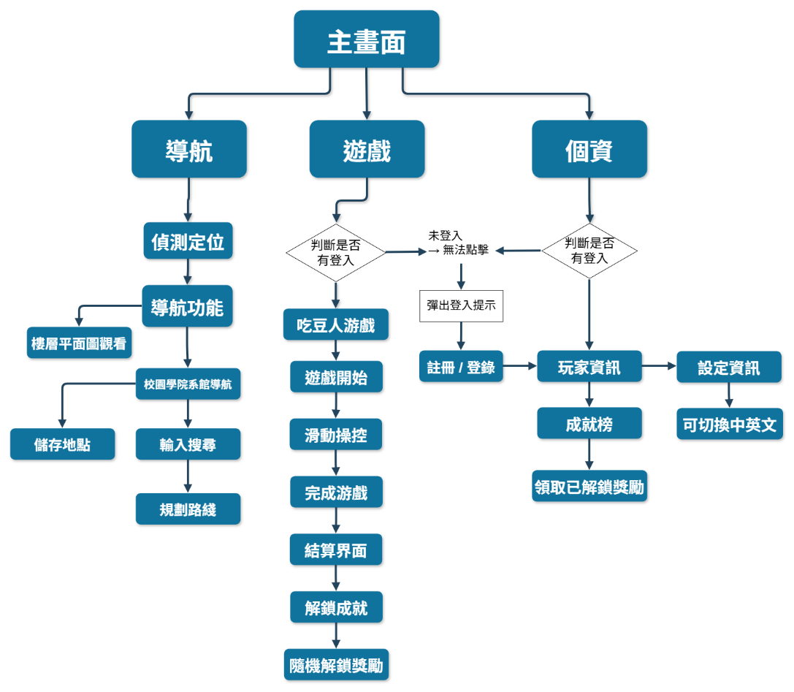
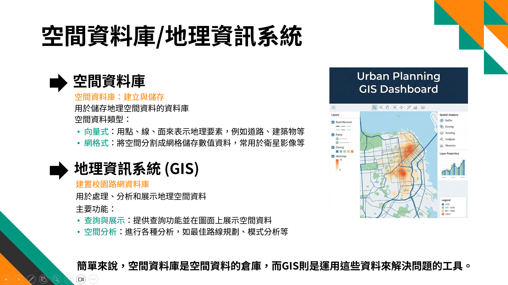
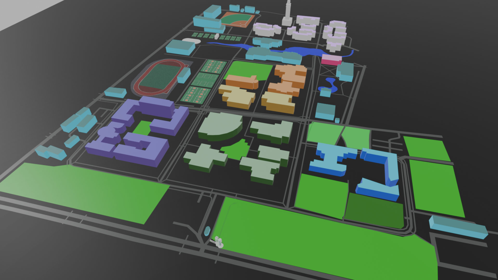
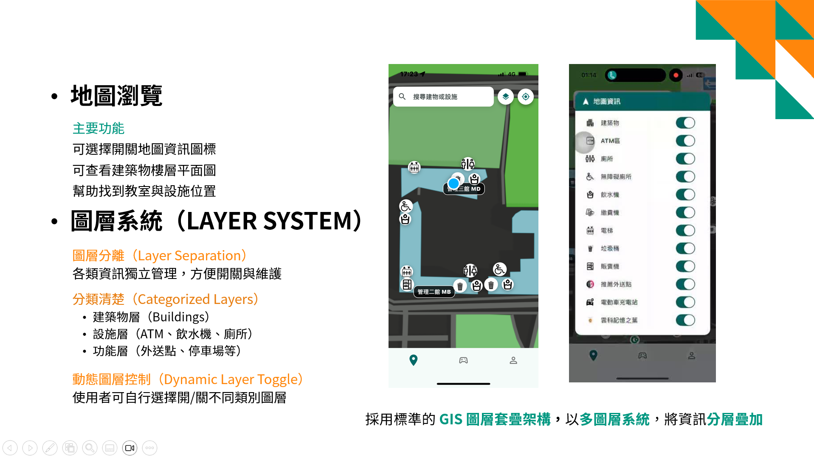
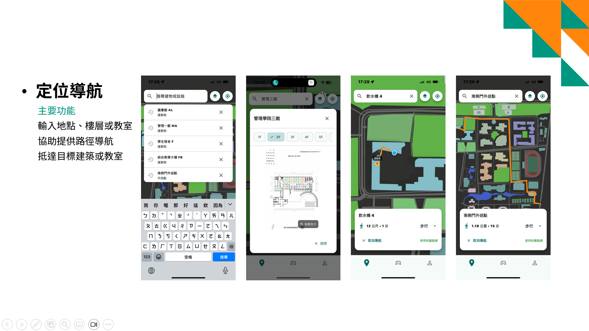
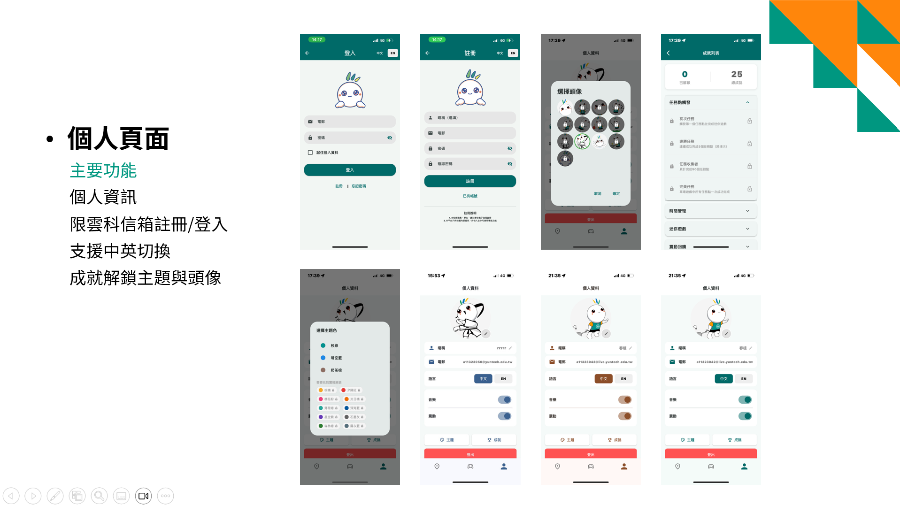
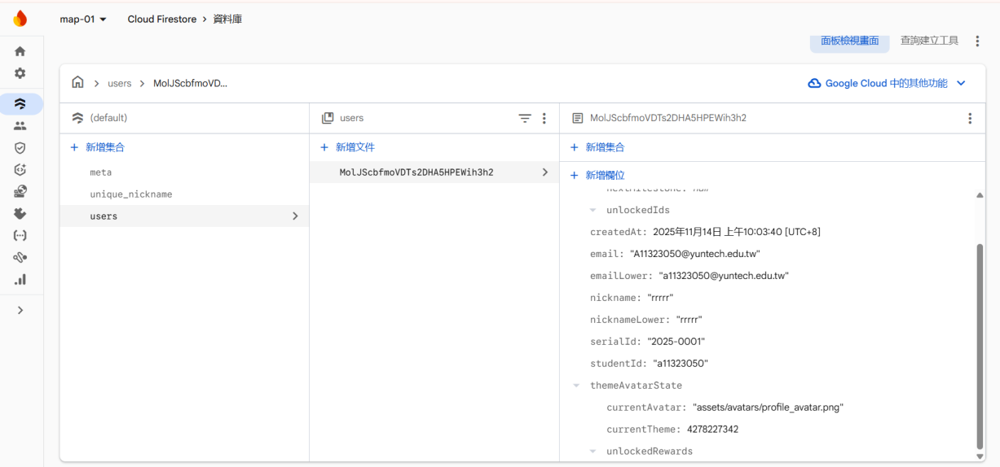

這個作品收錄了同一個「校園導覽」題材的兩個階段：一開始以 3D 網頁地圖驗證概念,後來正式開發成具備 GPS 導航與遊戲化互動的「雲坐標」Flutter 跨平台 App。

校園幅員廣闊,新生、外籍生與訪客常常找不到教室或設施。我們希望做一套結合「校園路網導航」與「遊戲化互動」的應用,先用網頁 3D 地圖驗證視覺呈現,再進化成正式的行動 App。
「雲坐標」App 以底部三分頁架構組成：導航、遊戲、個資,並透過自行開發的座標轉換模組,將 GPS 訊號精確映射到自訂校園地圖圖片上。
網頁版已上線,歡迎點進去看看雲科校園探索你不知道的人事物吧~
點擊圖片可以放大檢視





